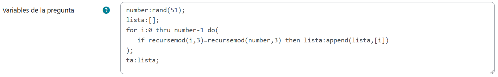
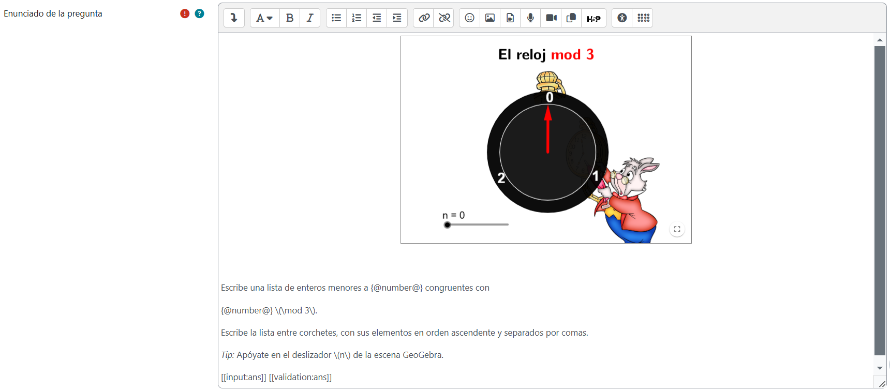
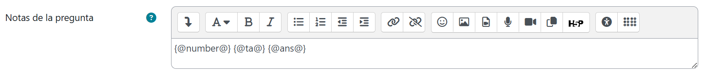
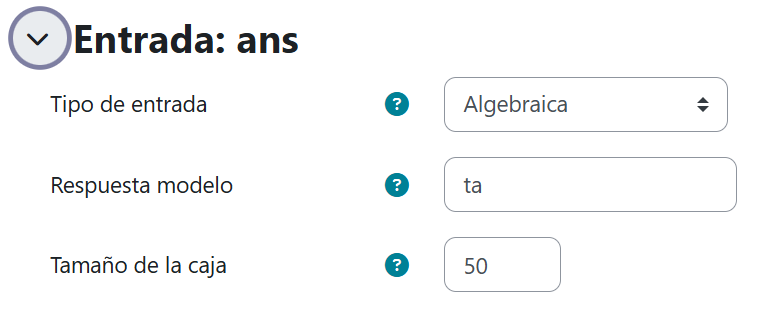
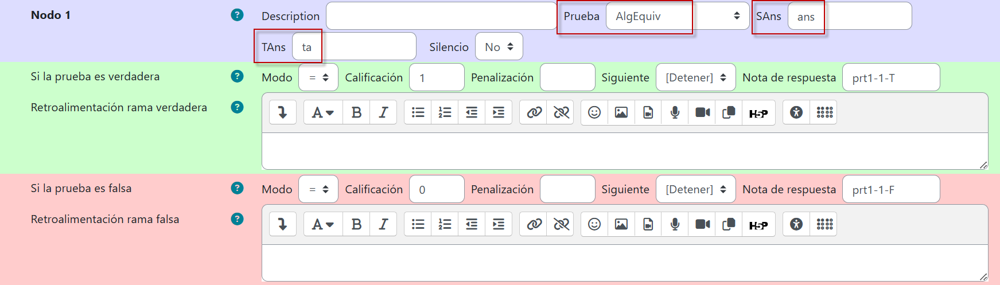
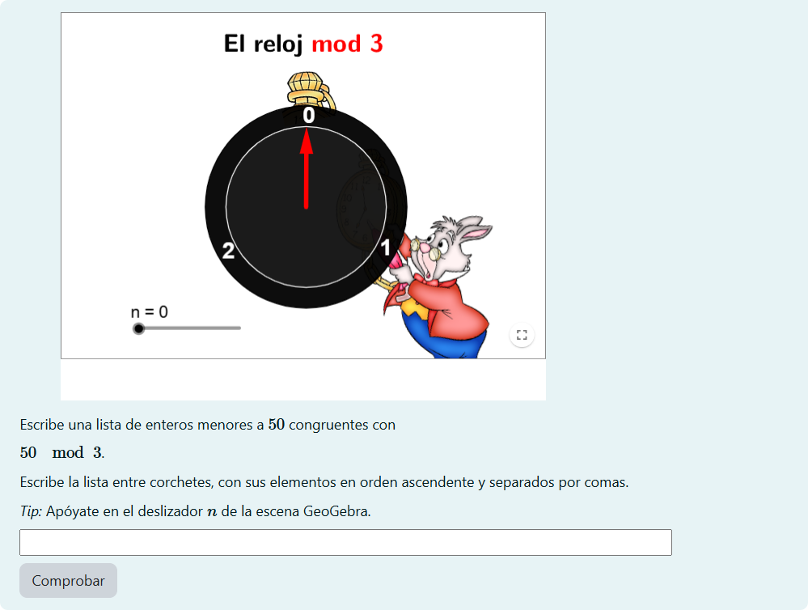

GeoGebra como iFrame
STACK y GeoGebra son dos herramientas independientes. Aunque el proyecto AuthOMath se ha encargado de conectarlas, las funcionalidades expuestas se conservarán a futuro en la medida en que sea posible a los participantes del mismo mantenerlas y actualizarlas, lo cual no está garantizado de forma permanente.
Por esa razón, cabe considerar crear preguntas de STACK que contengan como apoyo escenas GeoGebra simplemente embebidas, es decir, insertadas como iFrame de HTML, como en el siguiente ejemplo.
Imaginemos que queremos plantear una pregunta en la que los estudiantes identifiquen los números enteros menores que un número aleatorio dado, que además sean congruentes con este número módulo tres. En Variables de la pregunta, capturaremos el siguiente código para nuestro nuevo reactivo:

Con ello, hemos:
- Generado un número aleatorio entre cero y cincuenta, mediante number:random(51).
- Creado una lista vacía (con lista:[];) que luego hemos llenado desde un ciclo for con los enteros que satisfacen la condición mediante el comando append(lista,[i]) donde i corre desde 0 hasta number-1.
- Verificado la condición mediante el comando recursemod(variable,3) que calcula el módulo. Dicha instrucción no es nativa del CAS Maxima, sino interna a STACK diseñada por cuestiones meramente técnicas.
- Almacenado la lista llena en la variable ta.
En Enunciado de la pregunta, escribiremos las siguientes instrucciones:

En el enunciado hemos logrado que aparezca la escena GeoGebra del siguiente modo:
- Desde la URL de la escena (https://www.geogebra.org/m/tfmjkwvf), seleccionamos la opción Detalles.
- Luego, al hacer clic en el botón Compartir, seleccionamos la opción Incrustar. Ello genera un código que debe ser copiado en su totalidad.
- Ahora, desde el editor de código HTML del enunciado de la pregunta STACK, pegamos el código y luego corroboramos la correcta inserción deseleccionando la vista HTML del editor.
Puesto que el ejercicio posee características aleatorias, habremos de escribir el siguiente CasText en Notas de la pregunta, pues nos permitirá reconocer con facilidad en los registros de la plataforma Moodle el número aleatorio generado en cada intento, así como las correspondientes respuestas correcta e ingresada por el alumno:

En Entrada, dejaremos sin cambio todas las opciones por default y haremos solo las siguientes modificaciones:

Y en el Nodo 1, verificaremos la equivalencia algebraica de las listas (la respuesta esperada por el profesor y la ingresada por el estudiante):

Finalmente, este es el resultado luego de guardar los cambios y previsualizar:

Si bien es cierto que esta pregunta de STACK no está conectada con GeoGebra - toda vez que no emplea las posibilidades que brindan set, watch y remember - ejemplifica cómo es que aun así el reactivo encuentra un valioso soporte visual y dinámico en la escena, pues ésta ilustra el comportamiento cíclico del operador módulo y permite comprobar las respuestas en función de la coincidencia en los residuos.